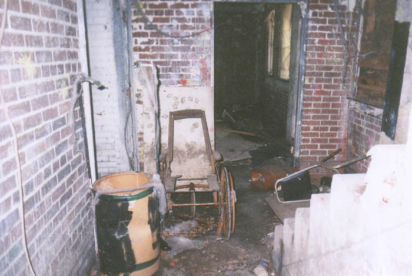

Inside the Roseville Prison
As much as I enjoy this prison's pleasantly disease-free sister at Junction City, I have to say that Roseville is much more classically prison-like. It surprises me that they made a movie there and not here, although I guess Junction City was easier to film because of the way the road circles the whole place. Roseville is built back away from the road, along a river with mud colored red from years of brickmaking.
Aside from the guard towers, exercise yard, and other evidence of habitation, the main building features a few actual cells--something noticeably missing at Junction City. The cells and barred doors have had the guts removed from their locks, however, to make sure no kids get locked inside by accident.
In addition to the two low-ceilinged cells, the first floor still contains a lot of the decoration used in the haunted house--streamers, dummies, fake gravestones with humorous misspellings, even an antique wooden wheelchair. One room was still outfitted as the office for the whole operation when we were there.

On the first floor, the scariest thing that we came across was a life-size female mannequin standing on a desk, dressed in a dirty white robe. She was part of the haunted house, of course, but it might be fun to go throw her from the roof when somebody's driving by.
The upper rooms are disappointingly un-prisonlike. They resemble the floors of some big industrial building--bare now, with pillars at regular intervals. It's possible to see where tables once stood, as well as some machinery, and there is occasionally an unidentifiable metal thing.
The walls upstairs in the main building are also absolutely coated with paint splotches from the many paintball wars held in this building. We even came across a scary practice target dummy. I wonder if the prison made any of the paintball people sick.
As I said, the only real clue on these levels that the workers couldn't leave is the presence of metal grates on the windows. I understand Qwest uses this method on its office employees.
Click below to continue the tour.
CONTINUE
Back
{kind=link}